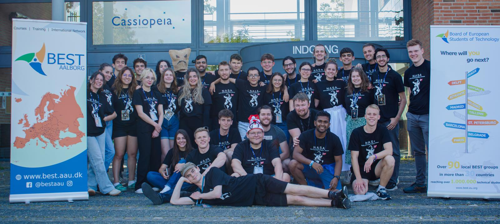

I am focused on how interactive experiences can make learning more engaging. Backed by a strong foundation in computer science, I design and develop full-stack educational platforms and games, bridging the gap between intuitive interface design, game mechanics, and robust software architectures.
Educational Platform Development
An educational platform that uses videogames to help university students learn basic concepts across different subjects. I designed the platform's core dynamics, including the subject structure, ranking system, and features aimed at keeping users motivated.
Beyond the user experience, I architected and developed both the frontend interface and the robust backend infrastructure supporting the platform.
University of Valladolid
Worked with a research group to teach programming concepts that were previously taught through games struggling to keep students engaged.
After analyzing the underlying problems of the existing solutions, I designed and developed two entirely new educational videogames from scratch, focusing on redesigning the mechanics to maintain student motivation throughout the learning process.
University of Valladolid (2022 - 2026)
During my studies, I gained a deep understanding of core computer science concepts such as software engineering, data structures, and algorithms. Maintaining a consistently high academic performance allowed me to not only grasp these fundamentals but also apply them to build robust technical solutions for complex projects.
Multidisciplinary Collaboration & Erasmus+
Through my active involvement in the Board of European Students of Technology (BEST), I have organized engineering competitions and job fairs while participating in international courses across Denmark, Portugal, and Estonia.
This experience, combined with my Erasmus+ exchange year at the University of Maribor in Slovenia, provided me with the opportunity to develop essential soft skills, adapt quickly to multicultural environments, and learn how to collaborate effectively in international, multidisciplinary teams.

best.jpeg